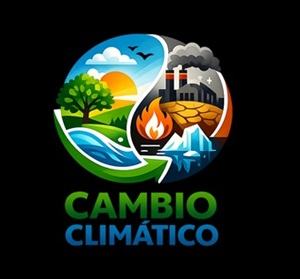

SERVICIOS
Somos parte de una generación que busca proteger la vida en todas sus formas. Inspirados por organizaciones como Fundación Lince, APASDEM, AZCARM, el Fondo Mexicano para la Conservación de la Naturaleza y Humane World for Animals, creemos que la unión de esfuerzos puede salvar especies en peligro y enfrentar el cambio climático. Cada evento de caridad, cada campaña de rescate y cada acción de conciencia nos recuerda que cuidar el medio ambiente y a los animales es un acto de esperanza y responsabilidad compartida.
Varias organizaciones y fundaciones en México y a nivel internacional realizan eventos de caridad y proyectos vinculados con la protección de animales en peligro de extinción y la lucha contra el cambio climático. Entre ellas destacan Fundación Lince, APASDEM, AZCARM, el Fondo Mexicano para la Conservación de la Naturaleza y Humane World for Animals.

🌿 Organizaciones y compañías relevantes
1. Fundación Lince
Enfoque: Conservación de la biodiversidad en México.
Acciones:
Campañas de rescate del lobo mexicano, jaguar y tortuga laúd.
Actividades de reforestación y educación ambiental.
Eventos de integración y team building para empresas, vinculados con la conservación.
Impacto: Promueven conciencia sobre la degradación ambiental y la importancia de restaurar ecosistemas.
2. APASDEM (Agrupaciones por los Animales de México)
Enfoque: Red de 66 asociaciones protectoras de animales.
Acciones:Promoción de la adopción responsable.
Asesoría en denuncias de violencia animal.
Campañas de concienciación sobre el bienestar animal.
3. AZCARM (Asociación de Zoológicos, Criaderos y Acuarios de México)
Enfoque: Conservación de especies en zoológicos y acuarios.
Acciones:
Planes de conservación y capacitación de personal.
Mejora de instalaciones para el cuidado de especies en riesgo.
4. Fondo Mexicano para la Conservación de la Naturaleza (FMCN)
Enfoque: Biodiversidad y cambio climático.
Acciones:
Apoyo a proyectos educativos y de conservación.
Colaboración con WWF y el gobierno en investigaciones ambientales.
Impacto: Es la mayor iniciativa privada de conservación en Latinoamérica.
5. Humane World for Animals (antes Humane Society International)
Enfoque: Respuesta ante desastres y rescate animal.
Acciones:
Organización de foros sobre preparación ante desastres climáticos incluyendo animales.
Intervenciones en emergencias como huracanes e inundaciones en México.
Impacto: Promueve la inclusión de animales en planes de emergencia y resiliencia climática.